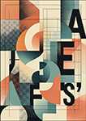
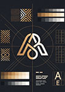

What I Do

Graphic & Layout Design
I create thoughtful, visually engaging layouts for print with a focus on typography, composition, color, and visual hierarchy. From brochures to posters and promotional materials, I design visuals that communicate clearly and leave a lasting impression.

Logos & Branding
I develop visual identities that give ideas a recognizable voice. Through distinctive logos, typography, color, and supporting visuals, I build cohesive branding that feels memorable, purposeful, and true to the character behind it.
Digital Media Collaboration
I combine graphic design, visual storytelling, and electronic music to create engaging digital experiences. I collaborate on projects involving motion graphics, video, sound, and music, bringing visual and audio elements together into a cohesive creative direction.